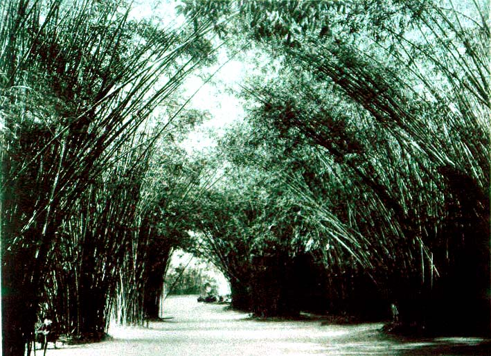

|
|  |
|
Marc Ferrez, Jardim Botânico
|
While the museum domesticated nature by framing it in the classificatory order of science, parks, botanical and zoological gardens brought the 'wilderness' into the space of the city, in a similar triumph of representation and reason over a surrounding space that earlier, romantic literary and artistic representations had still portrayed as a menace lingering in the heart of the American continent. Rio de Janeiro´s botanical garden, created by the Austrian naturalists on their arrival in 1817, and directed over much of the century by João Barbosa Rodrigues, a naturalist from Amazonia and, between 1883 and 1889, director of the short-lived Museu Botânico do Amazonas of Manaus. Brazil´s first botanical garden, at Belém do Pará, even dates from colonial times, having been founded in 1796 (only twenty-four years after the inauguration of the first botanical garden in the Portuguese motherland, at Coimbra). Other urban parks included the Campo de Sant´Anna, designed by the French botanist and paysagiste Auguste Glaziou, on which the National Museum was originally located.
|